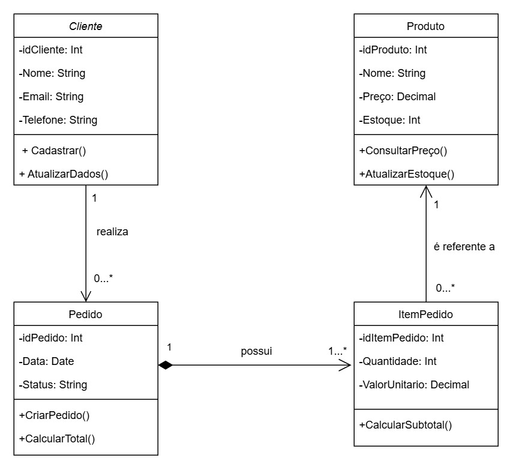
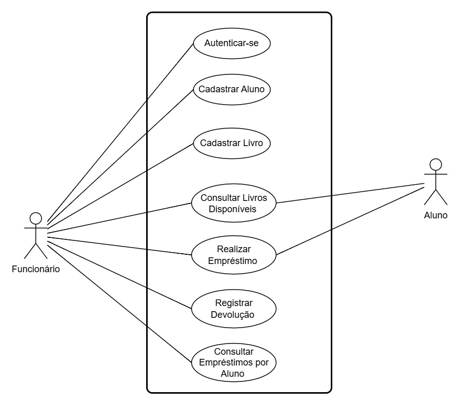

Engenharia de Software
Disciplina 2 — Base de Conhecimento Acadêmica
Conteúdos disponíveis
Ciclo de Vida e Processos Engenharia de Requisitos Modelagem e UML Metodologias de Desenvolvimento3. Modelagem e UML
Introdução à UML
UML significa Unified Modeling Language,
ou Linguagem de Modelagem Unificada. É uma linguagem utilizada
para visualizar, especificar,
construir e documentar sistemas, especialmente sistemas
orientados a objetos.
A UML permite representar diferentes aspectos de um
software por meio de diagramas, facilitando a comunicação
entre os participantes do projeto.
É importante destacar que UML é uma linguagem de modelagem, e não uma metodologia ou um processo de desenvolvimento.
Os diagramas UML podem representar aspectos estruturais e comportamentais de um sistema.
Diagrama de classes
O diagrama de classes representa a estrutura de um sistema, mostrando suas classes, atributos, operações e relacionamentos.
Uma classe representa um conjunto de objetos que possuem características e comportamentos em comum.
Seus principais elementos são:
- Classe: representa uma estrutura que descreve objetos.
- Atributos: representam as características ou informações de uma classe.
- Operações ou métodos: representam as ações ou comportamentos associados à classe.
- Relacionamentos: demonstram como as classes se conectam.
Entre os relacionamentos utilizados na modelagem estão:
- Associação: representa uma ligação entre classes.
- Agregação: representa uma relação de todo e parte em que as partes podem existir independentemente do todo.
- Composição: representa uma relação de todo e parte com dependência mais forte entre os elementos.
- Generalização: representa uma relação de herança entre classes.

O diagrama de classes ajuda a compreender como as informações e responsabilidades estão organizadas no sistema.
Diagrama de casos de uso
O diagrama de casos de uso representa as funcionalidades de um sistema e os participantes que interagem com ele.
Seus principais elementos são:
- Ator: representa um papel desempenhado por uma pessoa ou sistema externo que interage com o software.
- Caso de uso: representa uma funcionalidade ou serviço oferecido pelo sistema.
- Associação: indica a interação entre um ator e um caso de uso.
- Relacionamento Include: representa a inclusão obrigatória de um comportamento de outro caso de uso.
- Relacionamento Extend: representa a extensão de um caso de uso por um comportamento adicional, em determinadas condições.
- Generalização: representa uma relação de especialização entre atores ou casos de uso.

O diagrama permite visualizar as funcionalidades disponíveis e os participantes envolvidos, facilitando a compreensão dos requisitos do sistema.